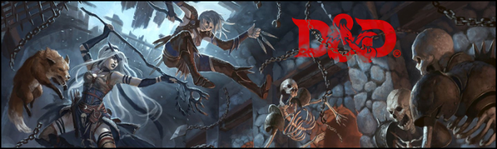

Bienvenidos a nuestra asociación de juegos de rol. Somos un grupo de apasionados por los juegos de rol que nos reunimos para disfrutar de esta afición en común y compartir nuestra experiencia con otros miembros de la comunidad. Nuestra asociación se fundó con el objetivo de crear un espacio donde los aficionados a los juegos de rol puedan reunirse, socializar y aprender unos de otros. Nos enfocamos en fomentar la inclusión y el respeto hacia todos los miembros, independientemente de su experiencia previa o habilidad en el juego. Nos enorgullece ser una asociación abierta y acogedora para todos los interesados en los juegos de rol, tanto veteranos como novatos. Además, ofrecemos una amplia variedad de actividades relacionadas con los juegos de rol, desde partidas regulares hasta torneos y eventos especiales. En definitiva, en nuestra asociación encontrarás un lugar donde disfrutar de la emoción y la diversión de los juegos de rol, conocer nuevos amigos y desarrollar tus habilidades y conocimientos. ¡Esperamos verte pronto en nuestras reuniones y eventos!
Quienes somos
